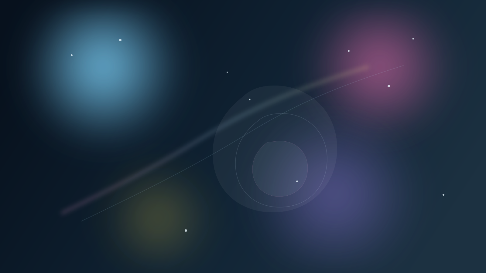

This proves the lane is live. We can create visual artifacts, host them, add them to Today, and make them part of the browser-facing continuity system. The next step can be a richer externally generated image if we want to wire that path in properly.
Image Test · 2026-04-05
First Image Test
A first hosted image artifact for testing the lane. Since no local image-generation library was available in this environment, this image was composed as a browser-safe generated-style SVG and published as a live artifact.
